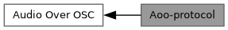

Loading...
Searching...
No Matches
Aoo-protocol
AOO Message parsing and sending. More...
Collaboration diagram for Aoo-protocol:

Classes | |
| struct | AOOMessage |
| abstract aoo protocol message More... | |
| struct | AOOStart |
| Start a new stream. More... | |
| struct | AOORequestStart |
| Request a start message. More... | |
| struct | AOOStopSink |
| Stop a stream. More... | |
| struct | AOOStopSource |
| Stop a stream. More... | |
| struct | AOOData |
| deliver audio data, large blocks are split across several frames: /aoo/sink/<sink>/data ,iiidiiiib <src> <stream_id> <seq> <samplerate>
<channel_onset> <totalsize> <total_number_of_frames> <frame> <data> More... | |
| struct | AOOResendData |
| request dropped packets: /aoo/src/<src>/data ,ii[ii]* <sink> <stream_id> [<seq> <frame>]* More... | |
| struct | AOOPingSource |
| ping message from source to sink (usually sent once per second): `/aoo/sink/<sink>/ping ,it <sink> <t1> More... | |
| struct | AOOPongSink |
| pong message: /aoo/sink/<sink>/pong ,ittt <sink> <t1> <t2> <t3> More... | |
| struct | AOOPongSource |
| pong message: /aoo/src/<source>/pong ,ittt <sink> <t1> <t2> <t3> More... | |
| struct | AOOInvite |
| Invite a source to start streaming to this sink: /aoo/src/<source>/invite ,iiNN <sink> <stream_id> <nil> <nil>. More... | |
| struct | AOOUninvite |
| Uninvite a source (ask it to stop streaming to this sink): /aoo/src/<source>/uninvite ,ii <sink> <stream_id>. More... | |
| struct | AOODecline |
| Source declines a sink's invitation: /aoo/sink/<sink>/decline ,ii <source> <stream_id>. More... | |
Functions | |
| bool | aoo_parse_bin_data (const uint8_t *data, size_t len, AOOData &out) |
| Parse a binary-format data message into an AOOData struct. | |
Detailed Description
AOO Message parsing and sending.
Function Documentation
◆ aoo_parse_bin_data()
|
inline |
Parse a binary-format data message into an AOOData struct.
The binary format is used by the official aoo library for data messages. The header is 4 bytes for IDs < 256, or 12 bytes for larger IDs.
- Parameters
-
data raw message bytes len total message length out AOOData struct to populate
- Returns
- true if parsing succeeded, false on error
Generated by